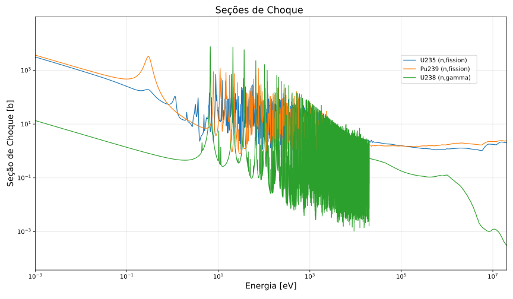
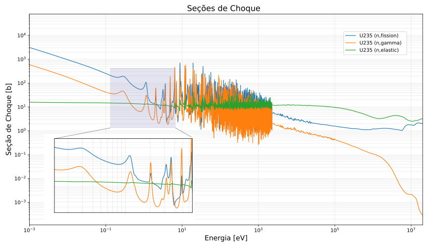

Antes de considerarmos em detalhes os vários tipos de reações nêutron-núcleo que são significativas na análise de reatores, é útil fazer uma pausa e discutir brevemente a física subjacente que dita o comportamento dessas seções de choque. Afinal, esses números não são aleatórios; eles obedecem a regras fundamentais.
Existem dois aspectos principais envolvidos na análise das seções de choque de nêutrons:
- A cinemática das colisões de duas partículas.
- A dinâmica das reações nucleares.
A cinemática das colisões de dois corpos — isto é, a aplicação das leis de conservação de momento e energia a tais colisões.
Já a dinâmica das reações nucleares diz respeito aos mecanismos físicos fundamentais envolvidos nesses eventos de colisão. Os dois mecanismos de maior interesse nas aplicações de reatores nucleares são:
-
Espalhamento Potencial: Onde o nêutron meramente quica no campo de força do núcleo sem realmente penetrar na superfície nuclear.
-
Formação de Núcleo Composto: Onde o nêutron incidente é realmente absorvido pelo núcleo para formar um novo núcleo de número de massa . Este novo núcleo, altamente instável, decai subsequentemente emitindo um gama, um nêutron ou talvez fissionando.
Na análise de uma colisão entre dois corpos, a distinção fica evidente na forma como tratamos a interação. Na cinemática (aqui entendida como a análise via leis de conservação), olhamos apenas para os estados assintóticos: “muito antes” e “muito depois” da colisão. Aplicamos a conservação do momento linear () e da energia cinética (), mas essas equações sozinhas não fecham o sistema em uma colisão bidimensional. Isso nos deixa com um parâmetro livre, geralmente o ângulo de espalhamento (), que a cinemática não consegue prever; ela apenas nos diz quais velocidades finais são possíveis para um dado ângulo escolhido.
Já na dinâmica, o foco está no conhecimento explícito da força aplicada durante o contato ou aproximação (o potencial de interação ou a força ). Ao invés de tratar a colisão como uma “caixa preta” instantânea, resolvemos as equações de movimento para cada instante da interação. Se conhecemos a força (por exemplo, uma repulsão eletrostática ou um modelo de esferas rígidas), o tal “parâmetro livre” (o ângulo ) deixa de ser livre: ele passa a ser deterministicamente calculado em função do parâmetro de impacto e da intensidade da força. A dinâmica preenche a lacuna deixada pela cinemática, explicando exatamente para onde as partículas vão.
Mecanismos de Interação Nêutron-Núcleo
I. Espalhamento Potencial
O tipo mais simples de reação nuclear que ocorre em um reator é o espalhamento potencial. Nele, o nêutron se espalha elasticamente no campo de potencial da superfície nuclear sem penetrar no núcleo propriamente dito - sem formar um núcleo composto. Classicamente, podemos visualizar esse evento como a colisão entre duas esferas rígidas, o que sugeriria uma seção de choque igual à área geométrica projetada (). No entanto, quanticamente temos um fator de correção fundamental: devido à natureza ondulatória do nêutron em baixas energias (onde o comprimento de onda é muito maior que o raio nuclear, ), a seção de choque efetiva para o espalhamento de onda- é quatro vezes maior que a previsão clássica:
Quanto à dependência energética, essas seções de choque são caracterizadas por um comportamento bastante plano (constante) na região epitérmica e de ressonâncias, variando pouco desde cerca de 1 eV. Contudo, essa constância é válida apenas enquanto o comprimento de onda do nêutron é grande comparado ao núcleo (). Ao adentrar a faixa de MeV (onde ), efeitos de ondas parciais superiores e de difração tornam-se relevantes, fazendo com que a seção de choque deixe de ser constante e passe a oscilar e decair, tendendo assintoticamente a em energias muito altas.
Por fim, é crucial notar que o espalhamento potencial está sempre presente. Ele atua como uma interação de “fundo” (background) contínua, ocorrendo sempre que o nêutron entra no alcance das forças nucleares, independentemente da existência ou não de ressonâncias (formação de núcleo composto).
Heuristicamente, o comportamento dessa interação é governado pela dualidade onda-partícula e pelo comprimento de onda de de Broglie (). Se a energia do nêutron é pequena, seu comprimento de onda é grande (extenso espacialmente); nessa escala, o nêutron não consegue “resolver” os detalhes internos do núcleo e interage com o átomo como um todo ou, em energias muito baixas (térmicas), até mesmo com as vibrações das ligações moleculares e a rede cristalina. Inversamente, se a energia é muito alta, o comprimento de onda torna-se minúsculo, permitindo que o nêutron atue como uma sonda pontual capaz de penetrar a barreira de potencial e interagir individualmente com os núcleons (prótons e nêutrons) constituintes.
II. Formação de Núcleo Composto
Outro mecanismo crucial em física de reatores é a reação de núcleo composto, cujo modelo foi teorizado por Niels Bohr em 1936. Nesse processo, o nêutron incidente não apenas interage com o campo de potencial, mas penetra no núcleo alvo e é absorvido, redistribuindo sua energia cinética entre todos os núcleons do sistema. Isso cria um núcleo intermediário altamente excitado, o núcleo composto , veja a Figura 1. A evidência física para a existência desse estado reside na escala de tempo da interação: enquanto o tempo de trânsito de um nêutron pelo diâmetro nuclear é da ordem de s, a vida média de um núcleo composto é imensamente maior, variando tipicamente entre e s. Essa longevidade comprova que o nêutron fica temporariamente “aprisionado”, interagindo complexamente até que energia suficiente se concentre novamente em uma partícula para permitir sua emissão.
Figura 1: Esquema da formação de um núcleo composto e seus níveis de energia.
Essa longa vida útil implica uma consequência analítica fundamental: a perda de memória do sistema quanto ao canal de formação. Como a energia de excitação é rapidamente redistribuída e termalizada entre os núcleons, o núcleo composto “esquece” o histórico do nêutron incidente. Isso significa que as probabilidades relativas dos modos de decaimento subsequentes (se o núcleo irá sofrer fissão, captura radiativa ou emitir um nêutron) dependem exclusivamente do estado quântico atual do núcleo composto (energia, spin e paridade), e não de como ele foi criado. Matematicamente, isso é vital pois permite tratar a formação e o decaimento como eventos estatísticos independentes, onde a seção de choque total para uma reação é o produto da probabilidade de formação do núcleo composto pela probabilidade de ele decair através de um canal específico.
Por fim, é importante notar que a formação desse núcleo composto não ocorre de maneira uniforme em qualquer energia. Ela corresponde, na verdade, ao fenômeno de ressonância. A probabilidade de formação do núcleo composto dispara (formando picos abruptos na seção de choque) quando a energia de excitação do sistema — soma da energia cinética do nêutron com sua energia de ligação — coincide exatamente com um dos níveis discretos de energia quântica (estados virtuais) do núcleo composto. Fora dessas energias de ressonância, a formação do núcleo composto é muito menos provável, restando o espalhamento potencial como mecanismo dominante.
Análise Energética da Interação
Para entender exatamente quando ocorre uma ressonância, é preciso analisar a energia disponível no sistema.
Energia no Centro de Massa ()
Quando um nêutron incide sobre um alvo, nem toda a sua energia cinética no laboratório () está disponível para a excitação interna. Parte da energia está associada ao movimento do sistema como um todo e deve ser preservada para satisfazer a conservação do momento linear. A energia “útil” é a energia cinética relativa no sistema de Centro de Massa:
Onde é a massa do nêutron e a massa do núcleo alvo.
Essa distinção é crucial para a interpretação de dados. As ressonâncias ocorrem em energias de excitação fixas, mas os dados experimentais são plotados em função de . Isso gera um deslocamento entre a energia da ressonância observada e a energia “real” de interação, efeito que se torna mais pronunciado quanto menor for a massa do alvo.
Energia de Excitação Total ()
A energia total de excitação do núcleo composto () soma a energia cinética disponível () com a energia liberada pela captura do nêutron (energia de ligação).
Onde é a energia de separação do nêutron no núcleo composto . É a soma dessas parcelas que deve coincidir com um nível quântico virtual para que uma ressonância ocorra.
Estrutura de Níveis e o Potencial Nuclear
Para compreender profundamente as reações nucleares, especialmente a formação de ressonâncias, devemos abandonar a visão do núcleo como uma simples gota líquida homogénea e considerar a sua estrutura quântica interna. Assim como os elétron num átomo orbitam em camadas discretas de energia, os prótons e nêutrons dentro do núcleo estão confinados num poço de potencial nuclear () criado pela Força Forte.
Este confinamento resulta na quantização da energia: os nucleons só podem ocupar estados de energia discretos (níveis), definidos por números quânticos (principal, orbital e momento angular total). A imagem abaixo ilustra como esse potencial molda os níveis de energia permitidos. Note que, diferentemente do átomo, a forte interação spin-órbita no núcleo desdobra os níveis de energia (por exemplo, o nível divide-se em e ), alterando significativamente a “magia” e a estabilidade nuclear.
Por que é que isto é crucial para a interação núcleo-partícula?
A estrutura de níveis do “núcleo alvo” determina as energias exatas nas quais o “núcleo composto” pode existir. Quando a energia de excitação trazida pelo nêutron incidente () coincide exatamente com um destes níveis discretos (ou “virtuais”) do sistema excitado, a probabilidade de interação (seção de choque) aumenta drasticamente, resultando numa ressonância. Portanto, o “mapa” de níveis gerado pelo potencial nuclear é, em última análise, o que dita o espectro de absorção e espalhamento observado num reator.
Figura a: Representação esquemática dos níveis de energia de partícula única num poço de potencial nuclear . À esquerda, observamos o agrupamento dos estados quânticos (camadas) baseados no modelo de oscilador harmónico. À direita, a figura demonstra o efeito do acoplamento spin-órbita, onde a interação entre o spin intrínseco do nucleon e o seu momento angular orbital causa o desdobramento dos níveis (ex.: ). A distribuição destes níveis discretos define as propriedades do núcleo composto e as energias onde ocorrerão as ressonâncias.
O Conceito de Energia de Separação ( )
A Energia de Separação () é a energia mínima necessária para remover um único núcleon (nêutron ou próton) de um núcleo em seu estado fundamental, deixando o núcleo residual também em seu estado fundamental e sem energia cinética (separação ao infinito).
É o análogo nuclear da energia de ionização na física atômica. Enquanto a energia de ionização é o trabalho para remover um elétron, a energia de separação é o trabalho para remover um núcleon.
Matematicamente, ela pode ser vista como a diferença entre as energias de ligação total () do núcleo “pai” () e do núcleo “filho” ():
Alternativamente, podemos calculá-la pelo defeito de massa.
1. Energia de Separação do Nêutron ()
É a energia necessária para remover o nêutron menos ligado do núcleo. Equivalentemente, é a energia liberada quando um nêutron com energia cinética zero é capturado por um núcleo para formar o núcleo .
Onde:
são as massas atômicas neutras;
é a massa do nêutron.
2. Energia de Separação do Próton ()
Diferença fundamental: Ao contrário do nêutron, para um próton ser emitido ou capturado, ele não precisa apenas superar a energia de separação nuclear, mas também atravessar a barreira de potencial Coulombiana. Isso torna as reações com partículas carregadas (como ) muito mais difíceis em baixas energias do que as reações com nêutrons.
Exemplo Prático: Por que o U-235 fissiona com nêutrons térmicos e o U-238 não?
Esta é a aplicação clássica desse conceito na física de reatores. A “fissibilidade” depende do balanço entre a energia de excitação fornecida pela captura e a barreira de fissão (energia crítica).
A energia de excitação () adquirida pelo núcleo composto após absorver um nêutron térmico () é exatamente igual à Energia de Separação do nêutron no núcleo formado ().
Caso 1: O Núcleo Físsil ()
Ao capturar um nêutron, o vira .
A Energia de Separação do nêutron no é MeV.
A energia necessária para deformar o núcleo até a fissão (Energia Crítica) é MeV.
Conclusão: Como (), a simples energia liberada pela captura é suficiente para induzir a fissão.
Caso 2: O Núcleo Fissionável ()
Ao capturar um nêutron, o vira .
A Energia de Separação do nêutron no é MeV.
A Energia Crítica para fissão é MeV.
Conclusão: Como (), a captura térmica não fornece energia suficiente.
O que é necessário? O nêutron precisa trazer a diferença ( MeV) na forma de energia cinética. Por isso, o U-238 só fissiona com nêutrons rápidos.
Nota de Física Nuclear (Termo de Emparelhamento):
Por que a do U-236 é muito maior que a do U-239?
O U-236 é um núcleo par-par (Z=92, N=144), o que lhe confere uma estabilidade extra (maior energia de ligação) devido ao emparelhamento dos spins dos núcleons. Quando o U-235 (impar-mass) captura um nêutron, ele “fecha” um par, liberando muita energia.
Já o U-239 é um núcleo par-ímpar (Z=92, N=147). O nêutron capturado pelo U-238 não forma um novo par de nêutrons completo no mesmo nível orbital, liberando menos energia de ligação.
Para ilustrar isso, a figura abaixo mostra a estrutura de ressonância no comportamento da seção de choque de baixa energia para vários núcleos importantes (como U-235, Pu-239 e U-238). Observe a escala logarítmica e como as probabilidades (seções de choque) variam brutalmente, saltando de dezenas para milhões de barns em intervalos curtos de energia.

Figura 2: Comportamento da seção de choque em baixa energia para vários nuclídeos importantes. Note a variação abrupta nas regiões de ressonância.
Podemos comparar esse fenômeno à sintonia de um rádio analógico. Ao girar o dial, você percorre um espectro contínuo de frequências. Na maior parte do tempo, ouve-se apenas um chiado de fundo baixo e constante — este seria o equivalente ao espalhamento potencial, que está sempre presente. No entanto, quando a frequência do receptor coincide exatamente com a frequência de transmissão de uma estação, o circuito entra em ressonância e o sinal se torna subitamente intenso e claro. Da mesma forma, o nêutron incidente “varre” as energias; quando sua energia de excitação se alinha perfeitamente com um “canal” (nível quântico) do núcleo, a “recepção” (probabilidade de interação) aumenta em ordens de grandeza, criando os picos que vemos nos gráficos.
Visualização das Ressonâncias no U-235
A figura abaixo traz para o mundo real a teoria discutida anteriormente. Ela apresenta as seções de choque reais do Urânio-235, ilustrando vividamente o conceito de “casamento de níveis”.
O gráfico mostra a probabilidade de interação variando com a energia do nêutron. As regiões onde as linhas dão saltos gigantescos (note a escala logarítmica no eixo vertical) são as ressonâncias.
Nessas energias precisas, a energia total de excitação () “casa” perfeitamente com um nível quântico discreto do núcleo composto . Isso aumenta a probabilidade de formação desse núcleo em várias ordens de grandeza.
Observe o comportamento distinto dos canais de reação:
-
Absorção (Fissão e Captura): As curvas de fissão (azul) e captura radiativa () (laranja) seguem o mesmo padrão de picos. Elas saltam de valores baixos para milhares de barns nas ressonâncias. Isso ocorre porque ambas dependem da formação do núcleo composto. Uma vez formado o naquela energia de ressonância, ele “escolhe” como decair (fissionar ou emitir gama) com base nas probabilidades de cada canal.
-
Espalhamento Elástico (Sutil): A curva verde mostra o espalhamento. Diferente da absorção, ela possui um “piso” constante de cerca de 10 a 15 barns. Este é o espalhamento potencial, que está sempre presente (o nêutron batendo na superfície). Nas energias de ressonância, ocorre também o espalhamento por núcleo composto. O que vemos no gráfico é a interferência mecânico-quântica entre esses dois tipos de espalhamento. Por isso, em vez de picos simples e gigantescos como na fissão, o espalhamento mostra “tremulações” ou formas de onda mais sutis sobre sua base constante, às vezes até diminuindo ligeiramente antes de aumentar (um efeito de interferência destrutiva e construtiva).

Figura 3: Estrutura de ressonâncias nas seções de choque do U-235. O gráfico em escala log-log mostra as seções de choque de fissão (azul), captura radiativa (laranja) e espalhamento elástico (verde). Os picos abruptos na região de eV a keV ilustram o “casamento de níveis” na formação do núcleo composto. O zoom destaca as primeiras ressonâncias resolvidas. Note como as reações de absorção (fissão e captura) apresentam picos dramáticos, enquanto o espalhamento elástico (verde) mostra variações mais sutis devido à interferência com o espalhamento potencial de fundo.
A coincidência dos picos de fissão, captura e espalhamento que observamos na Figura 3 não é acidental. Ela é a consequência direta da física do núcleo composto.
O Decaimento do Núcleo Composto
A formação do estado excitado é apenas o primeiro estágio do processo. O segundo é o seu decaimento. Como discutido anteriormente, o núcleo composto vive tempo suficiente para “perder a memória” do histórico do nêutron incidente. Isso significa que a maneira como ele vai se desintegrar (o canal de saída) é essencialmente independente do processo de absorção original.
Uma vez formado, esse núcleo instável deve decair para voltar à estabilidade. Esse decaimento pode ocorrer através de vários canais competitivos, que definem o tipo de reação nuclear observada. Esquematicamente:
Esta independência entre entrada e saída explica a “sincronia” observada no gráfico do U-235. Se há uma ressonância (um nível de energia permitido) na energia , a probabilidade de formação do núcleo composto dispara. Consequentemente, esse pico aparecerá simultaneamente nos gráficos de captura, fissão e espalhamento, pois todas essas reações dependem da existência daquele mesmo estado excitado inicial.
O que muda de uma ressonância para outra é apenas a largura e a altura relativa dos picos em cada canal, dependendo de qual modo de decaimento é mais provável para aquele nível quântico específico.
Essas similaridades e diferenças ficarão ainda mais aparentes à medida que considerarmos em detalhes as reações específicas.
Mecanismos de Decaimento e a “Armadilha” da Captura
Para compreender o destino do nêutron após a formação do núcleo composto, devemos olhar para o diagrama de níveis de energia apresentada na figura abaixo.
Figura 4: Diagrama de níveis de energia ilustrando a competição entre espalhamento e captura. À esquerda, o núcleo alvo ; à direita, o núcleo composto . A linha pontilhada representa a Energia de Separação (limiar de ligação). O sistema é formado num estado virtual acima de . As setas indicam os canais de decaimento: (1) Espalhamento Elástico, onde o sistema retorna ao estado original; (2) Espalhamento Inelástico, onde o alvo permanece excitado (nível ); e (3) Captura Radiativa, onde a emissão de raios gama retira energia do sistema, derrubando-o para níveis ligados abaixo de , aprisionando efetivamente o nêutron.
Imagine o núcleo composto como um “poço”. A linha pontilhada inferior marcada como representa a borda do poço.
-
Abaixo dessa linha: Os níveis são ligados. O nêutron não tem energia suficiente para escapar da força nuclear; ele faz parte do núcleo.
-
Acima dessa linha: Os níveis são virtuais (ou não ligados). O sistema tem energia suficiente para expelir uma partícula.
Quando o nêutron incidente é absorvido, ele traz sua energia cinética mais a energia de separação, elevando o sistema para um desses níveis virtuais altamente excitados (parte superior da barra direita). A partir daí, o sistema tenta se desexcitar. O destino do nêutron depende de como o núcleo se livra desse excesso de energia:
-
O Caminho do Espalhamento (A Fuga):
Se o núcleo composto concentrar a energia de excitação de volta em um nêutron e expeli-lo, temos um espalhamento.
-
Seta 1 (Espalhamento Elástico): O nêutron é emitido deixando o núcleo alvo exatamente no seu estado fundamental. A energia cinética de saída é igual à de entrada (no referencial CM). O nêutron “quicou” e fugiu.
-
Seta 2 (Espalhamento Inelástico): O nêutron é emitido, mas deixa o núcleo alvo num estado excitado (com energia ). Para pagar por essa excitação do alvo, o nêutron sai com menos energia cinética do que entrou.
-
-
O Caminho da Captura (A Armadilha):
Aqui está o ponto crucial. O núcleo composto também pode se desexcitar emitindo radiação eletromagnética (raios gama).
- Seta 3 (Captura Radiativa): O núcleo composto emite um primeiro raio gama. Se a energia transportada por esse gama for grande o suficiente, a energia residual do sistema cai para baixo da linha de separação ().
Neste momento, a “porta de saída” se fecha. O nêutron agora tem energia total menor que a necessária para se separar do núcleo. Ele está irreversivelmente capturado. O núcleo continua emitindo uma cascata de gammas até atingir o estado fundamental do novo isótopo .
Portanto, a captura radiativa é, essencialmente, um processo de perda de energia interna que “aprisiona” o nêutron abaixo do limiar de evaporação.
Vamos agora entender o comportamento físico de cada tipo de reação, começando pela captura, que é o mecanismo principal de perdas de nêutrons sem geração de energia.